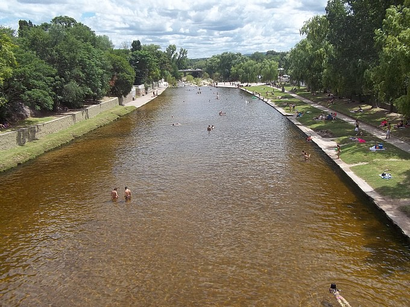
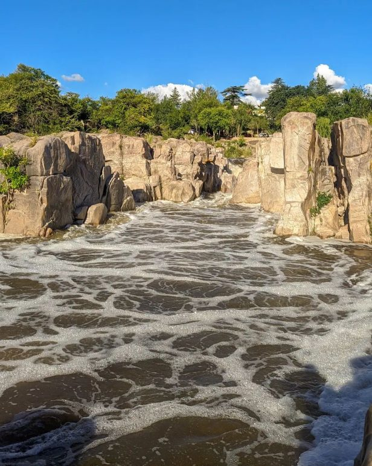
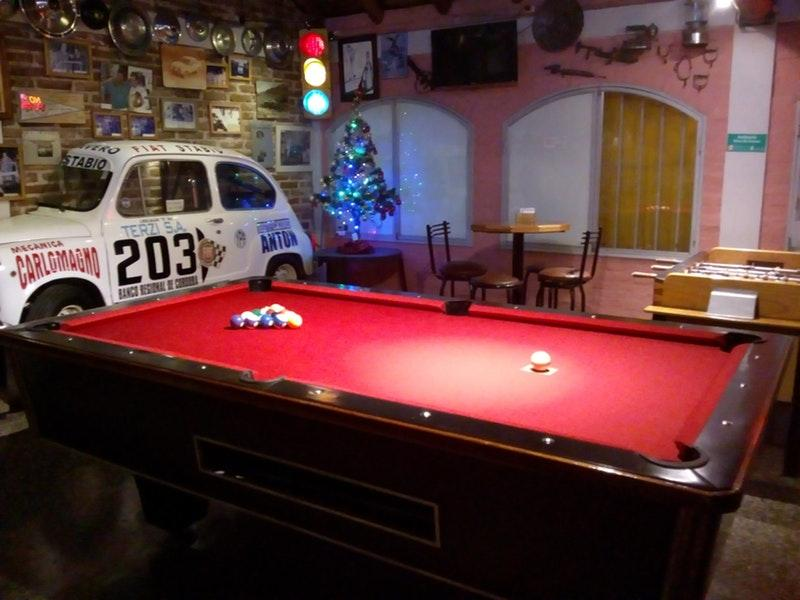
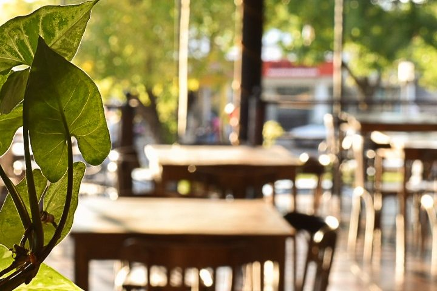
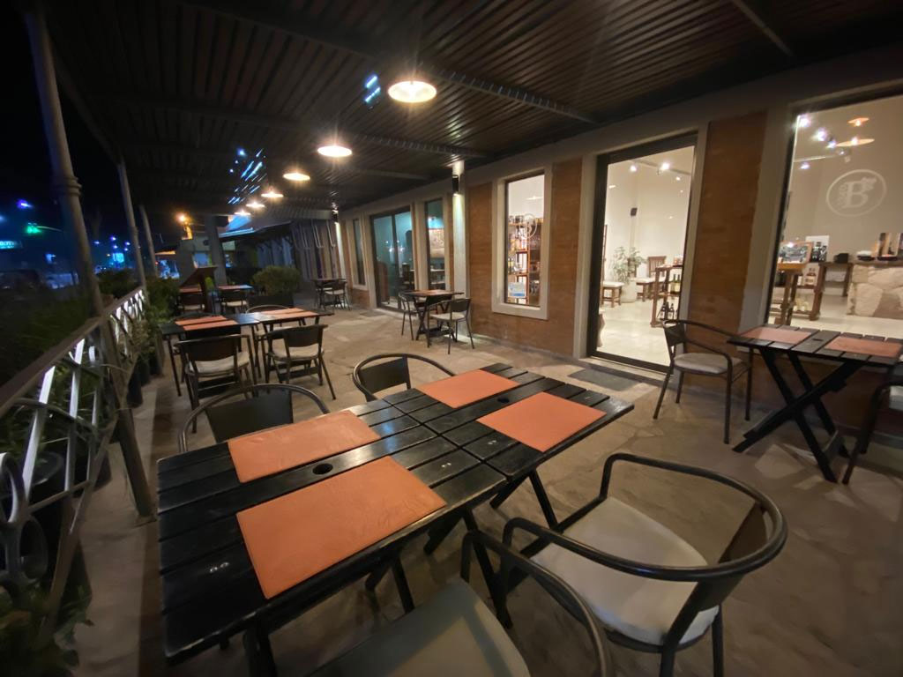

Bienvenidos a Mina Clavero
Con paisajes naturales de ensueño y su río homónimo declarado una de las Siete Maravillas Naturales de Argentina, Mina Clavero ofrece una propuesta completa de actividades al aire libre y una gran variedad de planes para disfrutar.
Lugares turísticos
- La Toma
En un marco de singular belleza, encontramos este balneario con toboganes naturales, deleite de grandes y chicos. Además de hoyas y cascadas, las profundidades del río Mina Clavero en sus inicios invitan a nadar.
.jpg)
En este balneario el río se encajona entre paredones de granito de hasta 22 mts de altura. La acción del agua ha dado origen a piletas naturales que suelen superar los 10 metros de profundidad. Este lugar es el preferido de nadadores y clavadistas.

Balneario natural ubicado al pie del tradicional hotel Residencia Serrana, que con su arquitectura europea domina el paisaje. En este sitio el río es de mediana profundidad y con playas, ideal para familias con niños.

Doradas y extensas, estas playas se recuestan en el centro de la localidad, sobre la cuenca del río Mina Clavero, entre el puente central y el puente Olmos. Ideal para las actividades en la arena con panorámicas de las sierras dignas de postales. Su ubicación y las tardes de música y deportes las convierte en las preferidas de los jóvenes.

El principal atractivo de este balneario es la pileta municipal construida entre 1924 y 1932, y está ubicado en el corazón de la ciudad. Ideal para quienes quieren disfrutar del río sin alejarse del centro. Sus márgenes de césped y baldosas forman un solarium, y la profundidad de las aguas va de los 60 centímetros hasta 1,80 metros y son ideales para nadar o remar en kayak.
Sobre el cauce del río Los Sauces se encuentran Los Cajones, donde el agua transita una cuenca cerrada, formando rápidos y profundas hoyas. Al final de los cajones, donde la cuenca se abre, surge a ambos costados una formación rocosa que se asemeja a la figura de dos elefantes a través de los cuáles el agua discurre formando una pequeña cascada.
Hoteles
- Las leñas
- Mi lugar
Confortables habitaciones con baño privado, dobles, triples, cuádruples y departamentos para 6 personas. A 200m del centro y río, y a 50m de la terminal de ómnibus.

Hostería céntrica, con habitaciones dobles y triples. Totalmente acondicionadas, con materiales y revestimientos de primera calidad. Admite contingente, aire acondicionado,calefaccion en habitacion, cocheras, internet, ropa blanca, desayuno, tv en salon, wifi.

Hostería céntrica, con habitaciones dobles y triples. Totalmente acondicionadas, con materiales y revestimientos de primera calidad. Admite contingente, aire acondicionado,calefaccion en habitacion, cocheras, internet, ropa blanca, desayuno, tv en salon, wifi.
Un lugar pensado para quienes gusten de la paz y la tranquilidad, un refugio íntimo y mágico para reencontrar su energía. Donde cada espacio fue diseñado para crear una atmósfera de descanso, de informalidad. Hosteria La Estancia, nace como un espacio para reunir amigos. Así lo soñamos y es el espíritu con el que recibimos a cada uno de nuestros huéspedes. Nuestra puertas están abiertas… será un placer recibirlo cuando decida visitar Mina Clavero


Hotel La Lucre pone a su disposición dos opciones diferentes de hospedaje, para que usted elija la que mas se adapta a sus necesidades. Porque a la hora de elegirnos, queremos cuidar cada detalle para que su estadía sea placentera. Cuenta con asador, servicio de ropa blanca, frigobar, TV en salón y en habitaciones, servicio de desayuno y mucama, rampas de acceso para discapacitados. Admite contingentes. Abierto todo el año.

Gastronomia
La estupenda ubicación de este lugar hace que llegar a él por cualquier medio sea muy sencillo. Un gran número de críticos encuentran que puedes beber un insuperable vino, un delicioso cordial o un espectacular champán en este restaurante. Es posible que hayas leído opiniones que dicen que el café cortado aquí es sensacional. Su de confianza personal muestra un alto nivel de hospitalidad en Mi Lugar.

Hamburguesas, lomitos, menú vegetariano. Espacio al aire libre y salón.Muchos clientes se han dado cuenta de que el servicio es apropiado. Lash video bar te ofrece una gran variedad de platos a unos precios bajos. Sin duda vas a disfrutar de su confortable ambiente y su moderna decoración.
La terraza del almacén te permite probar unos sorprendentes sándwiches, unas atrayentes quesadillas y un casero cerdo. Disfruta de su estupenda cerveza.
La clave de este restaurante está en su cocina argentina. Te va a encantar su comida, en particular su singular rape, su casero entrecote y sus generosas empanadas. Un gran número de clientes creen que aquí puedes pedir un delicado pastel de frutas, unos bien preparados helados y un sabroso flan. Este lugar es conocido por su delicioso vino, su extraordinario cordial y su sorprendente cerveza artesanal. Basándonos en las opiniones de los usuarios, aquí sus camareros ofrecen un sensacional café cortado y una estupenda limonada. Puedes venir con niños, ya que Belgrano 1340 tiene un menú infantil muy amplio. Su muy activo personal muestra un alto nivel de calidad en este lugar. Este lugar tiene una atmósfera moderna y una decoración confortable.
